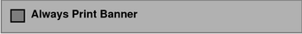

Solaris Trusted Extensions Administrator's Procedures
|
|||||||||||||||||||||||||
|
Part I Initial Configuration of Trusted Extensions 1. Security Planning for Trusted Extensions 2. Configuration Roadmap for Trusted Extensions 3. Adding Solaris Trusted Extensions Software to the Solaris OS (Tasks) 4. Configuring Trusted Extensions (Tasks) 5. Configuring LDAP for Trusted Extensions (Tasks) 6. Configuring a Headless System With Trusted Extensions (Tasks) Part II Administration of Trusted Extensions 7. Trusted Extensions Administration Concepts 8. Trusted Extensions Administration Tools 9. Getting Started as a Trusted Extensions Administrator (Tasks) 10. Security Requirements on a Trusted Extensions System (Overview) 11. Administering Security Requirements in Trusted Extensions (Tasks) 12. Users, Rights, and Roles in Trusted Extensions (Overview) 13. Managing Users, Rights, and Roles in Trusted Extensions (Tasks) 14. Remote Administration in Trusted Extensions (Tasks) 15. Trusted Extensions and LDAP (Overview) 16. Managing Zones in Trusted Extensions (Tasks) 17. Managing and Mounting Files in Trusted Extensions (Tasks) 18. Trusted Networking (Overview) 19. Managing Networks in Trusted Extensions (Tasks) 20. Multilevel Mail in Trusted Extensions (Overview) 21. Managing Labeled Printing (Tasks) Labels, Printers, and Printing Managing Printing in Trusted Extensions (Task Map) Configuring Labeled Printing (Task Map) 22. Devices in Trusted Extensions (Overview) 23. Managing Devices for Trusted Extensions (Tasks) 24. Trusted Extensions Auditing (Overview) 25. Software Management in Trusted Extensions (Tasks) Creating and Managing a Security Policy Site Security Policy and Trusted Extensions Computer Security Recommendations Physical Security Recommendations Personnel Security Recommendations Additional Security References B. Using CDE Actions to Install Zones in Trusted Extensions Associating Network Interfaces With Zones by Using CDE Actions (Task Map) Preparing to Create Zones by Using CDE Actions (Task Map) Creating Labeled Zones by Using CDE Actions (Task Map) C. Configuration Checklist for Trusted Extensions Checklist for Configuring Trusted Extensions D. Quick Reference to Trusted Extensions Administration Administrative Interfaces in Trusted Extensions Solaris Interfaces Extended by Trusted Extensions Tighter Security Defaults in Trusted Extensions Limited Options in Trusted Extensions E. List of Trusted Extensions Man Pages Trusted Extensions Man Pages in Alphabetical Order |
Reducing Printing Restrictions in Trusted Extensions (Task Map)The following tasks are optional. They reduce the printing security that Trusted Extensions provides by default when the software is installed.
How to Remove Labels From Printed OutputPrinters that do not have a Trusted Extensions printer model script do not print labeled banner or trailer pages. The body pages also do not include labels. Before You BeginYou must be in the Security Administrator role in the global zone.
How to Assign a Label to an Unlabeled Print ServerA Solaris print server is an unlabeled print server that can be assigned a label for Trusted Extensions access to the printer at that label. Printers that are connected to an unlabeled print server can print jobs only at the label that has been assigned to the print server. Jobs print without labels or trailer pages and might print without banner pages. If a job prints with a banner page, the page does not contain any security information. A Trusted Extensions system can be configured to submit jobs to a printer that is managed by an unlabeled print server. Users can print jobs on the unlabeled printer at the label that the security administrator assigns to the print server. Before You BeginYou must be in the Security Administrator role in the global zone.
Example 21-2 Sending Public Print Jobs to an Unlabeled PrinterFiles that are available to the general public are suitable for printing to an unlabeled printer. In this example, marketing writers need to produce documents that do not have labels printed on the top and bottom of the pages. The security administrator assigns an unlabeled host type template to the Solaris print server. The template is described in Example 19-6. The arbitrary label of the template is PUBLIC. The printer pr-nolabel1 is connected to this print server. Print jobs from users in a PUBLIC zone print on the pr-nolabel1 printer with no labels. Depending on the settings for the printer, the jobs might or might not have banner pages. The banner pages do not contain security information. How to Remove Page Labels From All Print JobsThis procedure prevents all print jobs on a Trusted Extensions printer from including visible labels on the body pages of the print job. Before You BeginYou must be in the Security Administrator role in the global zone.
How to Enable Specific Users to Suppress Page LabelsThis procedure enables an authorized user or role to print jobs on a Trusted Extensions printer without labels on the top and bottom of each body page. Page labels are suppressed for all labels at which the user can work. Before You BeginYou must be in the Security Administrator role in the global zone.
How to Suppress Banner and Trailer Pages for Specific UsersBefore You BeginThe Always Print Banner checkbox in the Print Manager dialog box does not contain a checkmark. You must be in the Security Administrator role in the global zone.
How to Enable Users to Print PostScript Files in Trusted ExtensionsBefore You BeginYou must be in the Security Administrator role in the global zone.
Example 21-3 Enabling PostScript Printing From a Public SystemIn the following example, the security administrator has constrained a public kiosk to operate at the PUBLIC label. The system also has a few icons that open topics of interest. These topics can be printed. The security administrator creates an /etc/default/print file on the system. The file has one entry to enable the printing of PostScript files. No user needs a Print PostScript authorization. # vi /etc/default/print # PRINT_POSTSCRIPT=0 PRINT_POSTSCRIPT=1 |
||||||||||||||||||||||||
|